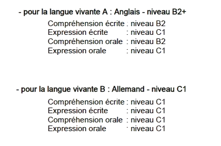

Mon CV en ligne
1. Qui suis-je ?
-
Je m'appelle Younes Oussar, je suis actuellement en première année de prépa intégrée du cursus de l'ENSIBS. J'effectue cette 1ère année à Lorient en suivant un cursus L1 SNIO et
j'ai pour objectif d'effectuer ma 2ème année à Vannes dans un cursus L2 Math-Info pour ensuite me rediriger vers une des filières informatique de l'école : cybersécurité du logiciel,
cybersécurité des données ou encore cyberdéfense.
2. Ce que je cherche
- Je cherche un stage et/ou une alternance dans une entreprise touchant au réseau et à la cybersécurité afin d'acquérir de l'expérience dans ce métier ainsi qu'en entreprise.
3. Mes compétences
-
Je suis à l'aise avec la programmation en python, je possède les bases du langage C, du langage HTML, CSS, JavaScript ainsi que le Java.
-
Je suis certifié B2+ en Langue vivante A : Anglais et C1 en Langue vivante B : Allemand. Certifié par l'État (Photo ci-dessous)

4. Projets et réalisations
J'ai réalisé de nombreux projets dans le cadre de mes études mais aussi dans le cadre des activités personnelles. Voici un tableau retranscrivant mes projets.